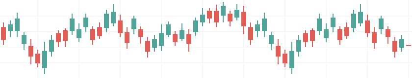
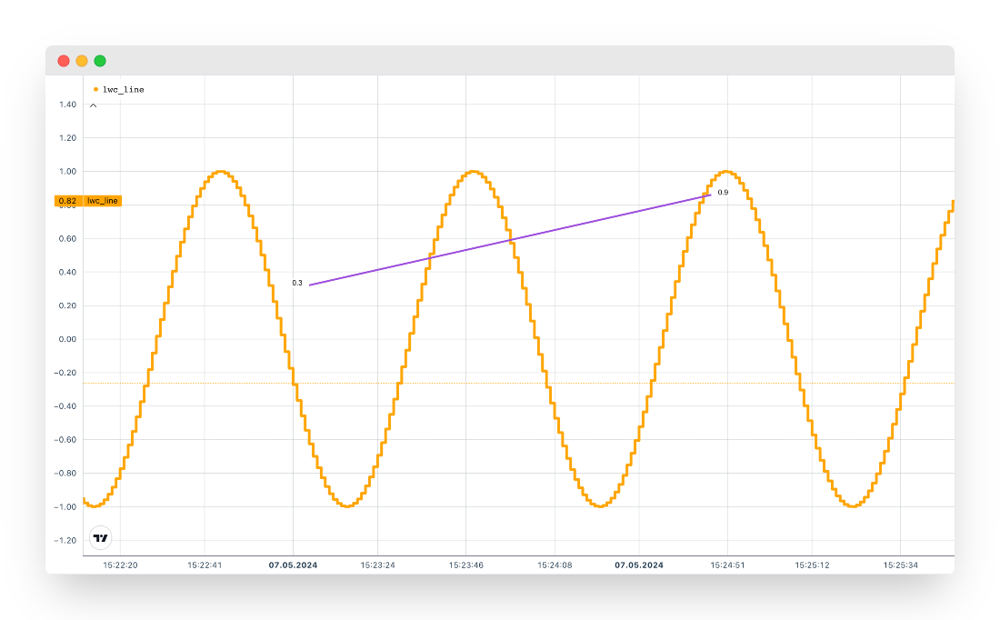
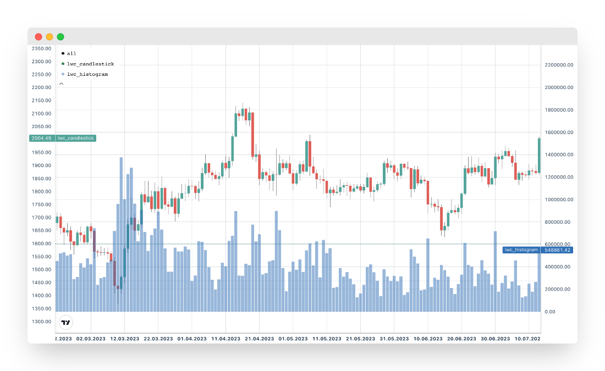
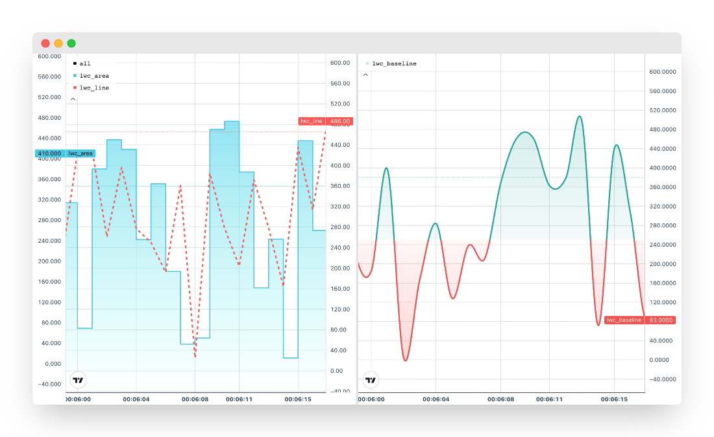
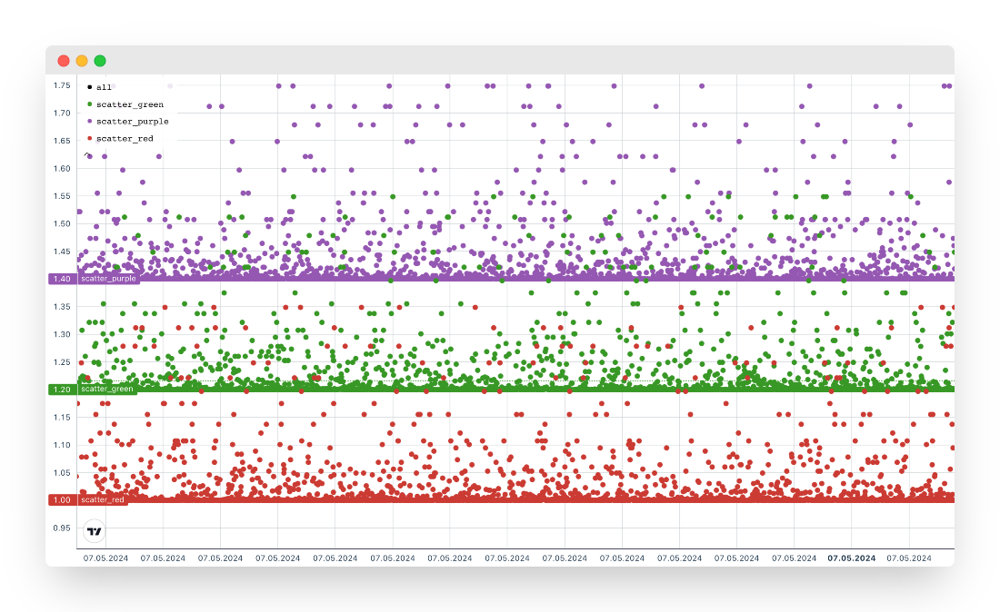

LightweightCharts.jl
LightweightCharts is a convenient Julia wrapper for the Lightweight Charts™ library by TradingView, Inc., designed to output graphical data to an HTML page.
Installation
To install LightweightCharts, simply use the Julia package manager:
] add LightweightChartsUsage
Simple line chart with styling options:
using LightweightCharts
t_values = round(Int64, time()) .+ collect(1:500)
x_values = sin.((1:500) / 10)
chart = lwc_line(
t_values,
x_values;
label_name = "lwc_line",
line_color = "orange",
line_width = 4,
line_style = LWC_SOLID,
line_type = LWC_STEP,
price_scale_id = LWC_LEFT,
plugins = LWCPlugin[
lwc_trend_line(100, 0.32, 200, 0.86; line_color = "#9d4edd"),
# lwc_delta_tooltip(),
# lwc_vert_line(150),
# lwc_crosshair_highlight_bar(),
# lwc_tooltip(; title = "my_tooltip")
],
)
lwc_show(chart)
Panel candlestick and histogram chart, (using data from CryptoAPIs):
using Dates
using CryptoAPIs
using LightweightCharts
ohlc = CryptoAPIs.Binance.Spot.candle(;
symbol = "ETHUSDT",
interval = CryptoAPIs.Binance.Spot.Candle.d1,
startTime = DateTime("2021-01-01"),
endTime = DateTime("2023-09-27"),
limit = 1000,
)
panel = lwc_panel(
lwc_candlestick(
map(
x -> LWCCandle(x.openTime, x.openPrice, x.highPrice, x.lowPrice, x.closePrice),
ohlc.result,
),
label_name = "lwc_candlestick",
up_color = "#52a49a",
down_color = "#de5e57",
border_visible = false,
price_scale_id = LWC_LEFT,
),
lwc_histogram(
map(x -> x.openTime, ohlc.result),
map(x -> x.volume, ohlc.result);
label_name = "lwc_histogram",
base = -100.0,
color = "rgba(47, 112, 181, 0.5)",
price_scale_id = LWC_RIGHT,
),
name = "ETHUSDT | Binance Spot",
)
lwc_show(panel)
Composite layout featuring diverse chart types:
using Dates, NanoDates
using LightweightCharts
layout = lwc_layout(
lwc_panel(
lwc_area(
NanoDate("2024-01-01") .+ Second.(1:500),
map(x -> rand(1:500), collect(1:500)),
label_name = "lwc_area",
line_color = "#49c7e3",
top_color = "#74d7ed",
bottom_color = "rgba(133, 242, 240, 0)",
line_style = LWC_SOLID,
line_type = LWC_STEP,
line_width = 2,
precision = 3,
price_scale_id = LWC_LEFT,
),
lwc_line(
NanoDate("2024-01-01") .+ Second.(1:500),
map(x -> rand(1:500), collect(1:500));
label_name = "lwc_line",
line_color = "#ff5752",
line_style = LWC_DASHED,
line_type = LWC_SIMPLE,
line_width = 3,
price_scale_id = LWC_RIGHT,
),
x = 1,
y = 1,
),
lwc_panel(
lwc_baseline(
NanoDate("2024-01-01") .+ Second.(1:500),
map(x -> rand(1:500), collect(1:500));
label_name = "lwc_baseline",
base_value = LWCBaseValue("price", 250),
line_style = LWC_SOLID,
line_type = LWC_CURVED,
line_width = 3,
precision = 4,
price_scale_id = LWC_RIGHT,
),
x = 2,
y = 1,
),
name = "LightweightCharts ❤️ Julia"
)
lwc_show(layout)
Scatter plot with distinct color:
using LightweightCharts
chart = lwc_panel(
lwc_line(
round(Int64, time()) .+ collect(1:5000),
map(x -> 1.4 + rand([0.0:0.005:0.8..., 0.8:0.01:0.9...])^10.0, 1:5000);
label_name = "scatter_purple",
line_color = "#9558b2",
point_markers_visible = true,
line_visible = false,
),
lwc_line(
round(Int64, time()) .+ collect(1:5000),
map(x -> 1.2 + rand([0.0:0.005:0.8..., 0.8:0.01:0.9...])^10.0, 1:5000);
label_name = "scatter_green",
line_color = "#389826",
point_markers_visible = true,
line_visible = false,
),
lwc_line(
round(Int64, time()) .+ collect(1:5000),
map(x -> 1.0 + rand([0.0:0.005:0.8..., 0.8:0.01:0.9...])^10.0, 1:5000);
label_name = "scatter_red",
line_color = "#cb3c33",
point_markers_visible = true,
line_visible = false,
),
max_y = 1.6
)
lwc_show(chart)